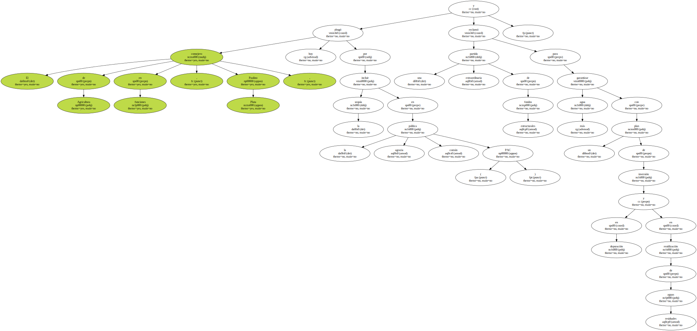
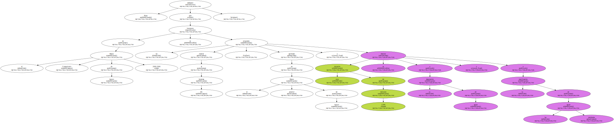
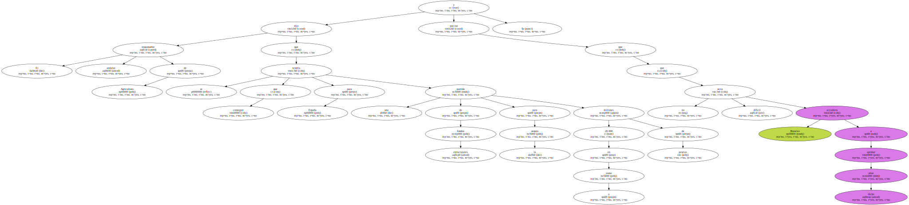
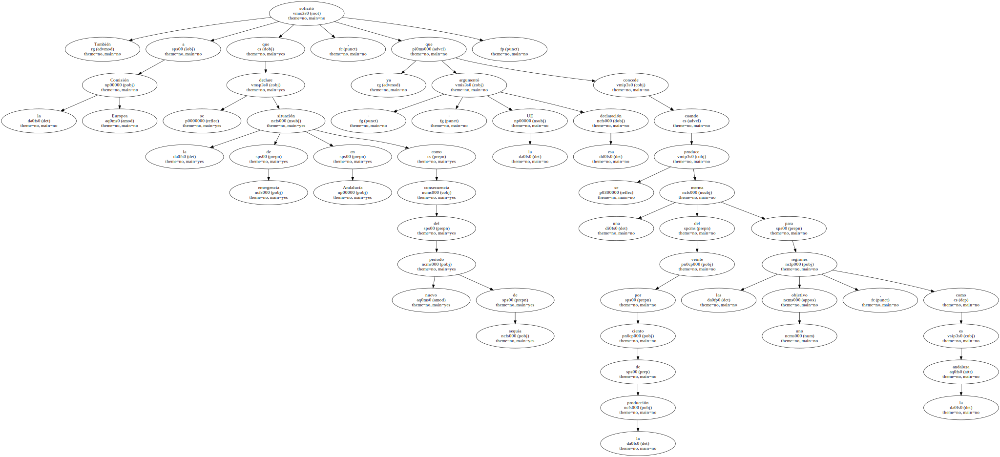
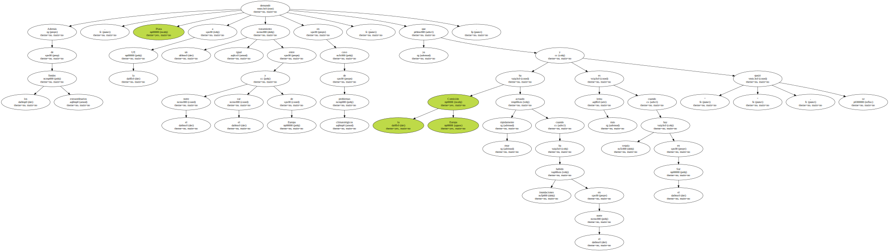
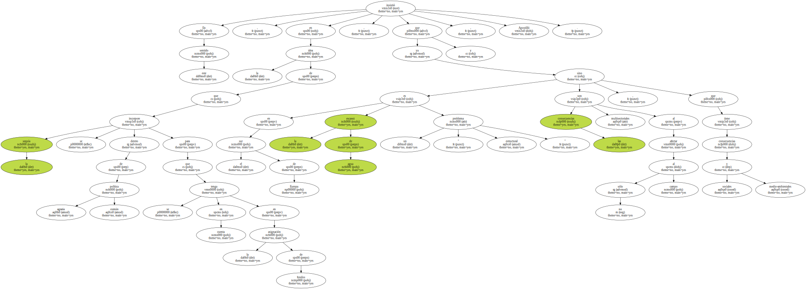

El consejero de Agricultura en funciones , Paulino Plata , abogó hoy por incluir la sequía en la política agraria común ( PAC ) y reclamó una partida extraordinaria de fondos estructurales para garantizar más agua con un plan de inversión en depuración y en reutilización de aguas residuales.
Plata defendió que en el Marco Comunitario de Apoyo 2000-2006 se incorpore un programa similar al Interreg IIC , aprobado en el anterior Marco de Apoyo y cuya dotación de 2.500 millones se destinó a la depuración de aguas y a la reutilización de las aguas residuales.
El responsable andaluz de Agricultura dijo que se tendría que conseguir para España una partida de fondos estructurales para la sequía en torno a 20.000 millones de pesetas y precisó que no sería difícil que Bruselas accediera a aprobar dicho plan.
También solicitó a la Comisión Europea que se declare la situación de emergencia en Andalucía como consecuencia del nuevo período de sequía , ya que - argumentó - la UE concede esa declaración cuando se produce una merma del veinte por ciento de la producción para las regiones objetivo uno , como es la andaluza.
Plata presentó un informe sobre la sequía en Andalucía , que lo ha trasladado ya al Ministerio de Agricultura para que lo tenga en cuenta en la elaboración de un memorándum que el Gobierno presentará a la Comisión Europea , y en el que se contienen medidas para afrontar los ciclos de sequía en el sur de Europa.

Además de los fondos extraordinarios , Plata demandó a la UE un tratamiento igual entre el norte y el sur de Europa en caso de problemas climatológicos , ya que " la Comisión Europa ha actuado muy rápidamente cuando ha habido inundaciones en el norte y es más lenta cuando hay sequía en el Sur " , se quejó.
En este sentido , insistió en la idea de que la sequía se incorpore dentro de política agraria común para que se tenga en cuenta en la asignación de fondos , ya que en el sur de Europa la escasez de agua es un " problema estructural " y las consecuencias son multisectoriales al afectar no sólo al campo , sino que tiene consecuencias sociales y medio-ambientales , Apostilló.
